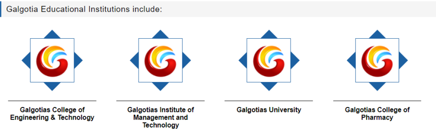

Galgotias Educational Institutions (GEI) have been inculcating practical skills and creating ‘Global Professionals’ for more than 18 years. Founded by Smt. Shakuntala Educational and Welfare Society, Galgotia Educational Institutions is currently led by Mr. Suneel Galgotia, Chairman and a resolute visionary. Galgotias College of Engineering & Technology is placed among the best in professional education in Dr. APJ Abdul Kalam Technical University (Formerly U.P. Technical University). It has achieved top positions in MBA, MCA and B.Tech. finals and has a record of 100% placements with the best corporate houses. It has also been ranked amongst the top engineering colleges in India by DATAQUEST NASSCOM survey and OUTLOOK-C For College Survey.
Galgotia Educational Institutions combine a supremely empowering educational process, industry stalwarts in their faculty, global educational associations and relentless placement efforts, to offer the best of career opportunities to its students. Galgotia Educational Institutions are known for a combination of state-of-the-art campus, strategic teaching-learning process, together with the most advanced facilities, creating an environment in which wholesome corporate personalities are created.
Galgotias College of Engineering and Technologyis approved by AICTE, Ministry of HRD, Government of India and affiliated to Dr. A.P.J. Abdul Kalam Technical University, Lucknow formerly Uttar Pradesh Technical University. Galgotias College of Engineering & Technology, established in 2000, synergizes theoretical knowledge and practical skills to promote all round professional competence. Galgotias College of Engineering & Technology has acquired a unique status in UP, the NCR region and the country as a whole by breaking new grounds in producing professionals of national and international acclaim and has been recognized as one of the top ranking institutions imparting high quality education.

The Campus, spread over 19 acres is located on an 8-lane expressway connecting Greater Noida with Noida and New Delhi. It is truly a self-sufficient campus with spacious and beautifully academic buildings, separate, fully secure and comfortable hostels for boys and girls, seminar and conference halls as well as indoor and outdoor games facilities and a multi-cuisine cafeteria.
Electronics and Communication Engineering Department of Glagotias College of Engineering and Technology is a hub of innovation and academic excellence. Our department is committed to fostering a learning environment that combines cutting-edge research, practical applications, and a strong foundation in theoretical knowledge. Our mission is to empower students with the skills and knowledge required to excel in the dynamic field of Electronics and Communication Engineering. We strive to create professionals who can contribute to technological advancements, societal development, and global innovation. Our faculty members are actively engaged in cutting-edge research in various domains of Electronics and Communication Engineering. Students have the opportunity to participate in research projects, contributing to advancements in the field.